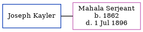

Ellen Horne c1880 -
[ Home ] | [ Calendar ] | [ Surnames Index ] | [ Census Index ] | [ Family History ]A domestic parlor maid and the child of Thomas Horne (a brewer's drayman) and Harriett Woods, Ellen Horne, the first cousin twice-removed on the father's side of Nigel Horne, was born in St Pancras, London, England c. 1880.
During her life, she was living at Derby Buildings in St Pancras on Apr 3, 18811; and at Britannia Street in St Pancras on Mar 31, 19012.
Parents
- Thomas Warner was born c. Nov 1854
- Harriett was born in 1860
Citations
- 1881 England, Wales & Scotland Census - Findmypast (was age 1 and the daughter of the head of the household)
- 1901 England, Wales & Scotland Census - Findmypast (was age 21 and the daughter of the head of the household)
Media
1901 England, Wales & Scotland Census - GBC/1901/0006707264
Family Tree
Generated by ged2site. Last updated on Jun 11, 2024